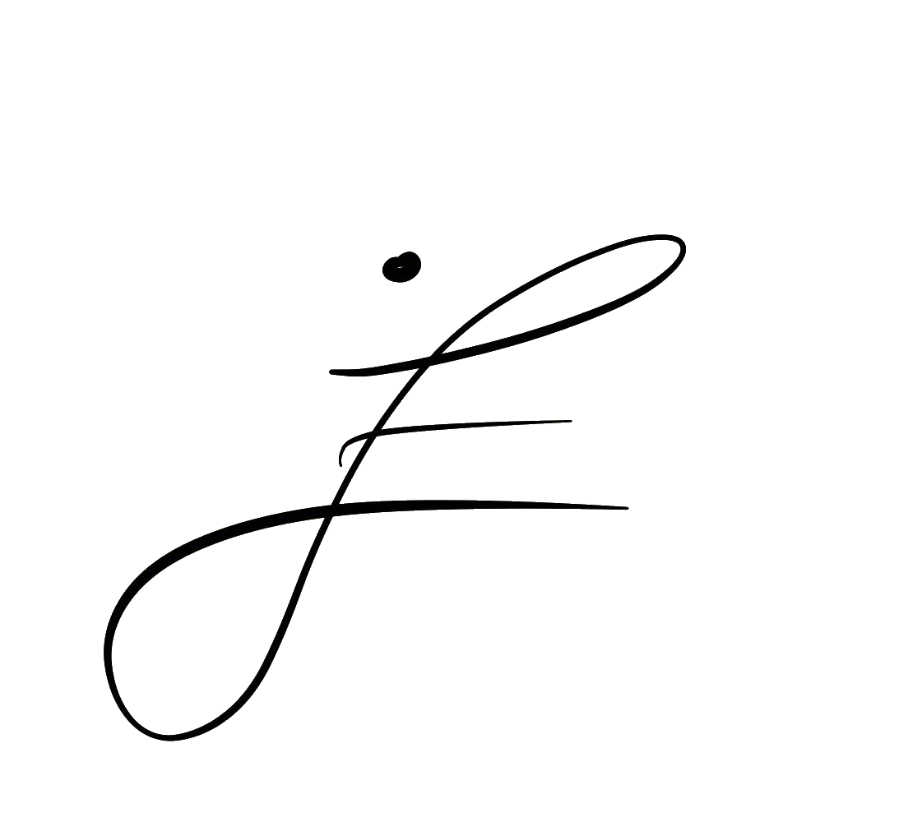

CV
Papers
Blog
Lists
blogs
https://hyperparameter.space/blog/what-if-we-just-learn-a-language-model-for-all-of-life/
https://www.lesswrong.com/bestoflesswrong
https://blog.booleanbiotech.com/protein-binder-design-revisited
https://jeremybernste.in/writing/deriving-muon
https://www.astralcodexten.com/
https://distill.pub/2016/augmented-rnns/
https://colah.github.io/posts/2014-07-Conv-Nets-Modular/
https://karpathy.github.io/2015/05/21/rnn-effectiveness/
https://ghost.oxen.ai/why-grpo-is-important-and-how-it-works/
https://www.aibiodesign.com/p/how-ai-will-replace-animal-testing
https://blog.biodock.ai/from-actin-to-z-stacks-the-imaging-journey/
https://atelfo.github.io/
https://markovbio.github.io/
http://gusevlab.org/projects/hsq/#h.7g8y898qpkvy
https://www.jeremykun.com/2015/04/06/markov-chain-monte-carlo-without-all-the-bullshit/
https://iwatobipen.wordpress.com/
https://alchemybio.substack.com/p/a-complete-guide-to-protein-folding
https://www.amplifypartners.com/blog-posts/cancers-95-percent-problem
https://gwern.net/backstop
music vids
LA NEGRA EN UTRERA. Al toque: Camarón, Moraito y Raimundo Amador
https://www.youtube.com/watch?v=Ir9qgbpJSMk&list=RD4SksJKyk6bY
https://www.youtube.com/watch?v=TMbPMmOI9Lo&list=RDTMbPMmOI9Lo
https://www.youtube.com/watch?v=lbKsf8vQLVk&list=RDlbKsf8vQLVk
https://www.youtube.com/watch?v=WHI2nWdRdXw&list=RDWHI2nWdRdXw
https://www.youtube.com/watch?v=JnpyCEUESEw&list=RDJnpyCEUESEw
https://www.youtube.com/watch?v=u0DOSMrvQB4&list=RDu0DOSMrvQB4
https://www.youtube.com/watch?v=D0RPSDEOxTA
longform tracks
Jim Hall sextet: Concierto De Aranjuez
Gil Evans: Las Vegas Tango
Arvo Part: Stabat Mater (Le Nuove Musiche, Krijn Koetsveld, Wendy Roobol)
Kara-Lis Coverdale: Grafts
Floating Points: Promises
Brian Eno: The Ship
Lino Capra Vaccina: Andante Ancestrale
Doubling Riders: I Graffiti di Orione e Delle Pleiade (Dedicated to Henri Lhote)
Arvo Part: Fratres (Gidon Kremer & Keith Jarrett)
Pharoah Sanders: Harvest Time
Traditional: Black is The Color of My True Love’s Hair (Marc Johnson, Bill Frisell, John Scofield, Peter Erskine)
Rupert Clervaux, Sian Ahern: In Shadowlands of Like and Lineness
Jordan De La Sierra: Temple of Aesthetic Action
Laraaji: Unicorns in Paradise
John Luther Adams: Become Ocean
stishki
Nabokov - Pale Fire
nerva l - the poem from foucault
Вы хожу один я на дорогу
letters from iceland, auden
strand, the couple
whatt, beckett
stuff
An ancient way of life under threat from modernity | Gaucho